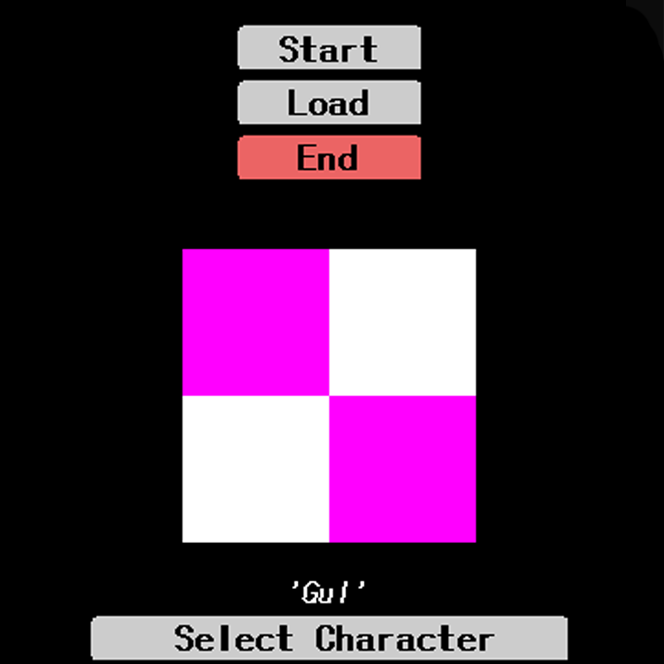
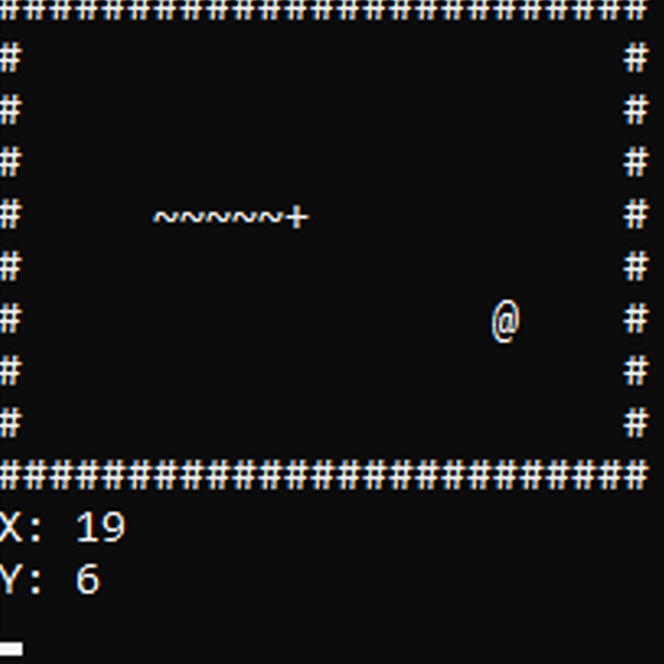

About Me
My name is Reece, I am a self-taught 17 year old programmer from the UK, alone in my own world. it's kinda lonely out here.
Throughout the years I have only progressed and this is what makes me excited for the future. I always wanted to create my own software and it all started with my Minecraft Server as a kid. And, just as a kid, I started to learn Java, my first programming language. It opened up a new world for me, with endless possibilities. It wouldn't matter if I was creating a calculator, or a lie detector, it was my magic. I designed this. I made this. And it spiraled my creativity. Ever since the moment I created my first calculator in Java, I realised that Software Engineers are not 0 and 1 stalkers, but influential artists.
My wisdom only grew and I eventually learnt everything I needed to know with Java, it really was my only paintbrush, that is until I began to learn to use other types of paintbrush; HTML, C++, C#, Javascript along with libraries and frameworks to match, came with it. By the age of 17, I am currently creating a Game Engine with low level calls with open-gl using C#.
In my spare time, I skate at the skatepark while listening to punk of course, I generally stay away from negative people but this city has lots of them! but I know who my real friends are... I think...
Projects
Here are a few of my projects. I will finish them at some point...
open-gl
Making an engine using open-gl
Adventure Game
Experimenting with Java's 2D canvas.
SnakeCMD
Snake in command line with C++ and C#
Feedback
Jordan Soffer (Old Boss)
"This past year, I decided I wanted to start a Minecraft server network. Upon much thought and consideration, I decided to start with a website. I have created and made many websites on my own, but this time I decided I wanted to hire a professional developer. Upon further review, I contacted Turpster, who has offered me excellent help since."
"To me, creating and building a website can be so stressful, but with Turpster by my side, it never was. Not only has he helped me with website design and stunning themes/templates, but also, custom programs & plugins alongside teaching me much regarding coding and programming languages."
"Overall, a great asset! Would highly recommend!"